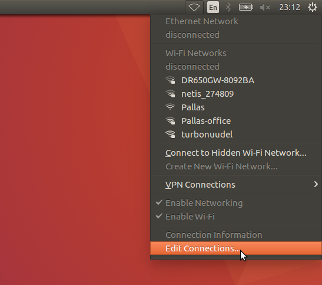

Introduction to Ubuntu 16.04 GUI¶
Slides are available here: pdf
Task 1: Familiarize Yourself with the Ubuntu Desktop¶
At the log-in screen, click in the password input box, enter academy for the password, and hit enter. The screen should look like the image below when you log in:

Screenshot of Ubuntu 16.04 desktop.
There are several things you will notice on the desktop:

We will briefly describe the two main panels visible.
Statusbar¶
- Ubuntu statusbar is located on the top right of the screen.
- Statusbar contains indicators which allow you to monitor the state of the system and applications. For laptops, you will see a battery level indicator.
- It also provides easy access to system controls, such as, sound level or wireless networks.
- The rightmost gear icon brings up a menu which allows the user to log out, shut down the computer, access system settings, etc…
Taskbar¶
- Taskbar is on the left side of the screen. It shows running and “favorite” applications, connected thumb drives, etc.
- The top icon is used to access all applications and files and can be envoked with a Super/Win key.
- The next icons are either applications which are currently running or have been “pinned” (again, more on pinning later)
- Any removable drives, like thumb drives, are found after the application icons.
- If the launcher bar gets “too full”, clicking and dragging up/down allows you to see the applications that are hidden.
- To reorganize the icons on the launcher, click and hold the icon until it “pops out”, then move it to the desired location.
Task 2: Open and Inspect an Application¶
Click on the filing-cabinet icon in the launcher. A window should show up, and your desktop should look like something below:

Things to notice:
- The close, minimize, and maximize buttons typically found on the right-hand side of the window title bar are found on the left-hand side.
- The menu for windows are found on the menu bar at the top of the screen, much in the same way Macs do. The menus, however, only show up when you hover the mouse over the menu bar.
- Notice that there are triangles on the left and right of the folder icon. The triangles on the left show how many windows of this application are open, and the right shows which application is currently in the foreground, or “has focus”. Clicking on these icons when the applications are open does one of two things:
- If there is only one window open, this window gets focus.
- If more than one are open, clicking a second time causes all of the windows to show up in the foreground, so that you can choose which window to go to (see below):

Task 3: Start an Application & Pin it to the Launcher Bar¶
Click on the launcher button (top left) and type gedit in the search box. The “Text Editor” application (this is actually gedit) should show up (see below):

Click on the application. The text editor window should show up on the screen, and the text editor icon should show up on the launcher bar on the left-hand side (see below):

- Right-click on the text editor launch icon, and select “Lock to Launcher”.
- Close the gedit window. The launcher icon should remain after the window closes.
- Click on the gedit launcher icon. You should see a new gedit window appear.
- The gedit application can now be opened quickly by a single click.
Task 4: Changing the IP¶
When working with robots, we often have to configure the network manually and fix IP addresses for hosts. Let’s have a look on how network profiles can be configured in Ubuntu via GUI.
Click on the radio button on the statusbar and choose “Edit Connections…”
A window with all your network connection profiles opens. Select “clearbot-0” and click “edit”.

Under the “IPv4 settings” tab, you can choose between manual or automatic (DHCP) mode. During this training we use the following manual network configuration:
- IP range for robots: 192.168.200.<1–99>
- IP range for laptops: 192.168.200.<101–199>
- Network mask: 255.255.255.0 (or shortly 24)
- Gateway: 192.168.200.250
- Nameserver: 8.8.8.8
For example, laptop-1 should have the following settings:

Check the number marked on your USB stick and make sure your configuration matches with the above.